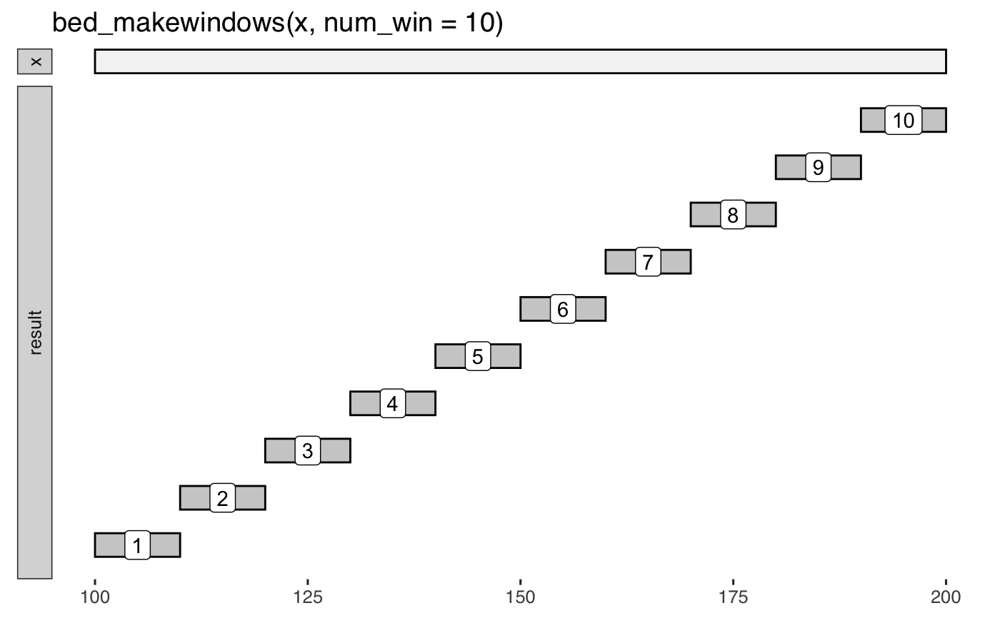

<!-- Generated by pkgdown: do not edit by hand -->
<!DOCTYPE html>
<html lang="en">
  <head>
  <meta charset="utf-8">
<meta http-equiv="X-UA-Compatible" content="IE=edge">
<meta name="viewport" content="width=device-width, initial-scale=1.0">

<title>Divide intervals into new sub-intervals ("windows"). — bed_makewindows • valr</title>

<!-- jquery -->
<script src="https://cdnjs.cloudflare.com/ajax/libs/jquery/3.3.1/jquery.min.js" integrity="sha256-FgpCb/KJQlLNfOu91ta32o/NMZxltwRo8QtmkMRdAu8=" crossorigin="anonymous"></script>
<!-- Bootstrap -->
<link href="https://maxcdn.bootstrapcdn.com/bootswatch/3.3.7/cosmo/bootstrap.min.css" rel="stylesheet" crossorigin="anonymous">

<script src="https://maxcdn.bootstrapcdn.com/bootstrap/3.3.7/js/bootstrap.min.js" integrity="sha384-Tc5IQib027qvyjSMfHjOMaLkfuWVxZxUPnCJA7l2mCWNIpG9mGCD8wGNIcPD7Txa" crossorigin="anonymous"></script>

<!-- Font Awesome icons -->
<link href="https://maxcdn.bootstrapcdn.com/font-awesome/4.6.3/css/font-awesome.min.css" rel="stylesheet" integrity="sha384-T8Gy5hrqNKT+hzMclPo118YTQO6cYprQmhrYwIiQ/3axmI1hQomh7Ud2hPOy8SP1" crossorigin="anonymous">

<!-- clipboard.js -->
<script src="https://cdnjs.cloudflare.com/ajax/libs/clipboard.js/2.0.1/clipboard.min.js" integrity="sha256-hIvIxeqhGZF+VVeM55k0mJvWpQ6gTkWk3Emc+NmowYA=" crossorigin="anonymous"></script>

<!-- sticky kit -->
<script src="https://cdnjs.cloudflare.com/ajax/libs/sticky-kit/1.1.3/sticky-kit.min.js" integrity="sha256-c4Rlo1ZozqTPE2RLuvbusY3+SU1pQaJC0TjuhygMipw=" crossorigin="anonymous"></script>

<!-- pkgdown -->
<link href="../pkgdown.css" rel="stylesheet">
<script src="../pkgdown.js"></script>


<!-- docsearch -->
<script src="../docsearch.js"></script>
<link rel="stylesheet" href="https://cdn.jsdelivr.net/npm/docsearch.js@2/dist/cdn/docsearch.min.css" />
<link href="../docsearch.css" rel="stylesheet">
<script src="https://cdnjs.cloudflare.com/ajax/libs/mark.js/8.11.1/jquery.mark.min.js" integrity="sha256-4HLtjeVgH0eIB3aZ9mLYF6E8oU5chNdjU6p6rrXpl9U=" crossorigin="anonymous"></script>


<meta property="og:title" content="Divide intervals into new sub-intervals ("windows"). — bed_makewindows" />

<meta property="og:description" content="Divide intervals into new sub-intervals (&quot;windows&quot;)." />

<meta property="og:image" content="http://valr.hesselberthlab.org/logo.png" />
<meta name="twitter:card" content="summary" />


<!-- mathjax -->
<script src='https://cdnjs.cloudflare.com/ajax/libs/mathjax/2.7.5/MathJax.js?config=TeX-AMS-MML_HTMLorMML'></script>

<!--[if lt IE 9]>
<script src="https://oss.maxcdn.com/html5shiv/3.7.3/html5shiv.min.js"></script>
<script src="https://oss.maxcdn.com/respond/1.4.2/respond.min.js"></script>
<![endif]-->


<!-- Global site tag (gtag.js) - Google Analytics -->
<script async src="https://www.googletagmanager.com/gtag/js?id=UA-54095998-3"></script>
<script>
  window.dataLayer = window.dataLayer || [];
  function gtag(){dataLayer.push(arguments);}
  gtag('js', new Date());

  gtag('config', 'UA-54095998-3');
</script>

  </head>

  <body>
    <div class="container template-reference-topic">
      <header>
      <div class="navbar navbar-default navbar-fixed-top" role="navigation">
  <div class="container">
    <div class="navbar-header">
      <button type="button" class="navbar-toggle collapsed" data-toggle="collapse" data-target="#navbar" aria-expanded="false">
        <span class="sr-only">Toggle navigation</span>
        <span class="icon-bar"></span>
        <span class="icon-bar"></span>
        <span class="icon-bar"></span>
      </button>
      <span class="navbar-brand">
        <a class="navbar-link" href="../index.html">valr</a>
        <span class="version label label-default" data-toggle="tooltip" data-placement="bottom" title="Released version">0.4.2</span>
      </span>
    </div>

    <div id="navbar" class="navbar-collapse collapse">
      <ul class="nav navbar-nav">
        <li>
  <a href="../index.html">
    <span class="fa fa-home fa-lg"></span>
     
  </a>
</li>
<li>
  <a href="../articles/valr.html">Get started</a>
</li>
<li>
  <a href="../reference/index.html">Reference</a>
</li>
<li class="dropdown">
  <a href="#" class="dropdown-toggle" data-toggle="dropdown" role="button" aria-expanded="false">
    Articles
     
    <span class="caret"></span>
  </a>
  <ul class="dropdown-menu" role="menu">
    <li>
      <a href="../articles/benchmarks.html">valr Benchmarks</a>
    </li>
    <li>
      <a href="../articles/interval-stats.html">Interval statistics</a>
    </li>
  </ul>
</li>
<li>
  <a href="../news/index.html">Changelog</a>
</li>
      </ul>
      
      <ul class="nav navbar-nav navbar-right">
        <li>
  <a href="https://github.com/rnabioco/valr">
    <span class="fa fa-github fa-lg"></span>
     
  </a>
</li>
      </ul>
      
      <form class="navbar-form navbar-right" role="search">
        <div class="form-group">
          <input type="search" class="form-control" name="search-input" id="search-input" placeholder="Search..." aria-label="Search for..." autocomplete="off">
        </div>
      </form>
      
    </div><!--/.nav-collapse -->
  </div><!--/.container -->
</div><!--/.navbar -->

      
      </header>

<div class="row">
  <div class="col-md-9 contents">
    <div class="page-header">
    <h1>Divide intervals into new sub-intervals ("windows").</h1>
    <small class="dont-index">Source: <a href='https://github.com/rnabioco/valr/blob/master/R/bed_makewindows.r'><code>R/bed_makewindows.r</code></a></small>
    <div class="hidden name"><code>bed_makewindows.Rd</code></div>
    </div>

    <div class="ref-description">
    
    <p>Divide intervals into new sub-intervals ("windows").</p>
    
    </div>

    <pre class="usage"><span class='fu'>bed_makewindows</span>(<span class='no'>x</span>, <span class='kw'>genome</span> <span class='kw'>=</span> <span class='kw'>NULL</span>, <span class='kw'>win_size</span> <span class='kw'>=</span> <span class='fl'>0</span>, <span class='kw'>step_size</span> <span class='kw'>=</span> <span class='fl'>0</span>,
  <span class='kw'>num_win</span> <span class='kw'>=</span> <span class='fl'>0</span>, <span class='kw'>reverse</span> <span class='kw'>=</span> <span class='fl'>FALSE</span>)</pre>
    
    <h2 class="hasAnchor" id="arguments"><a class="anchor" href="#arguments"></a>Arguments</h2>
    <table class="ref-arguments">
    <colgroup><col class="name" /><col class="desc" /></colgroup>
    <tr>
      <th>x</th>
      <td><p><code><a href='tbl_interval.html'>tbl_interval()</a></code></p></td>
    </tr>
    <tr>
      <th>genome</th>
      <td><p>this argument has been deprecated and is not used</p></td>
    </tr>
    <tr>
      <th>win_size</th>
      <td><p>divide intervals into fixed-size windows</p></td>
    </tr>
    <tr>
      <th>step_size</th>
      <td><p>size to step before next window</p></td>
    </tr>
    <tr>
      <th>num_win</th>
      <td><p>divide intervals to fixed number of windows</p></td>
    </tr>
    <tr>
      <th>reverse</th>
      <td><p>reverse window numbers</p></td>
    </tr>
    </table>
    
    <h2 class="hasAnchor" id="value"><a class="anchor" href="#value"></a>Value</h2>

    <p><code><a href='tbl_interval.html'>tbl_interval()</a></code> with <code>.win_id</code> column that contains a numeric
identifier for the window.</p>
    
    <h2 class="hasAnchor" id="note"><a class="anchor" href="#note"></a>Note</h2>

    <p>The <code>name</code> and <code>.win_id</code> columns can be used to create new
interval names (see 'namenum' example below) or in subsequent
<code>group_by</code> operations (see vignette).</p>
    
    <h2 class="hasAnchor" id="see-also"><a class="anchor" href="#see-also"></a>See also</h2>

    <div class='dont-index'><p>Other utilities: <code><a href='bed12_to_exons.html'>bed12_to_exons</a></code>,
  <code><a href='bound_intervals.html'>bound_intervals</a></code>,
  <code><a href='flip_strands.html'>flip_strands</a></code>,
  <code><a href='interval_spacing.html'>interval_spacing</a></code></p></div>
    

    <h2 class="hasAnchor" id="examples"><a class="anchor" href="#examples"></a>Examples</h2>
    <pre class="examples"><div class='input'><span class='no'>x</span> <span class='kw'>&lt;-</span> <span class='fu'><a href='tbl_interval.html'>trbl_interval</a></span>(
  ~<span class='no'>chrom</span>, ~<span class='no'>start</span>, ~<span class='no'>end</span>, ~<span class='no'>name</span>, ~<span class='no'>score</span>, ~<span class='no'>strand</span>,
  <span class='st'>"chr1"</span>, <span class='fl'>100</span>,    <span class='fl'>200</span>,  <span class='st'>'A'</span>,   <span class='st'>'.'</span>,    <span class='st'>'+'</span>
)

<span class='fu'><a href='bed_glyph.html'>bed_glyph</a></span>(<span class='fu'>bed_makewindows</span>(<span class='no'>x</span>, <span class='kw'>num_win</span> <span class='kw'>=</span> <span class='fl'>10</span>), <span class='kw'>label</span> <span class='kw'>=</span> <span class='st'>'.win_id'</span>)</div><div class='img'></div><div class='input'>
<span class='co'># Fixed number of windows</span>
<span class='fu'>bed_makewindows</span>(<span class='no'>x</span>, <span class='kw'>num_win</span> <span class='kw'>=</span> <span class='fl'>10</span>)</div><div class='output co'>#&gt; # A tibble: 10 x 7
#&gt;    chrom start   end name  score strand .win_id
#&gt;    &lt;chr&gt; &lt;int&gt; &lt;int&gt; &lt;chr&gt; &lt;chr&gt; &lt;chr&gt;    &lt;int&gt;
#&gt;  1 chr1    100   110 A     .     +            1
#&gt;  2 chr1    110   120 A     .     +            2
#&gt;  3 chr1    120   130 A     .     +            3
#&gt;  4 chr1    130   140 A     .     +            4
#&gt;  5 chr1    140   150 A     .     +            5
#&gt;  6 chr1    150   160 A     .     +            6
#&gt;  7 chr1    160   170 A     .     +            7
#&gt;  8 chr1    170   180 A     .     +            8
#&gt;  9 chr1    180   190 A     .     +            9
#&gt; 10 chr1    190   200 A     .     +           10</div><div class='input'>
<span class='co'># Fixed window size</span>
<span class='fu'>bed_makewindows</span>(<span class='no'>x</span>, <span class='kw'>win_size</span> <span class='kw'>=</span> <span class='fl'>10</span>)</div><div class='output co'>#&gt; # A tibble: 10 x 7
#&gt;    chrom start   end name  score strand .win_id
#&gt;    &lt;chr&gt; &lt;int&gt; &lt;int&gt; &lt;chr&gt; &lt;chr&gt; &lt;chr&gt;    &lt;int&gt;
#&gt;  1 chr1    100   110 A     .     +            1
#&gt;  2 chr1    110   120 A     .     +            2
#&gt;  3 chr1    120   130 A     .     +            3
#&gt;  4 chr1    130   140 A     .     +            4
#&gt;  5 chr1    140   150 A     .     +            5
#&gt;  6 chr1    150   160 A     .     +            6
#&gt;  7 chr1    160   170 A     .     +            7
#&gt;  8 chr1    170   180 A     .     +            8
#&gt;  9 chr1    180   190 A     .     +            9
#&gt; 10 chr1    190   200 A     .     +           10</div><div class='input'>
<span class='co'># Fixed window size with overlaps</span>
<span class='fu'>bed_makewindows</span>(<span class='no'>x</span>, <span class='kw'>win_size</span> <span class='kw'>=</span> <span class='fl'>10</span>, <span class='kw'>step_size</span> <span class='kw'>=</span> <span class='fl'>5</span>)</div><div class='output co'>#&gt; # A tibble: 20 x 7
#&gt;    chrom start   end name  score strand .win_id
#&gt;    &lt;chr&gt; &lt;int&gt; &lt;int&gt; &lt;chr&gt; &lt;chr&gt; &lt;chr&gt;    &lt;int&gt;
#&gt;  1 chr1    100   110 A     .     +            1
#&gt;  2 chr1    105   115 A     .     +            2
#&gt;  3 chr1    110   120 A     .     +            3
#&gt;  4 chr1    115   125 A     .     +            4
#&gt;  5 chr1    120   130 A     .     +            5
#&gt;  6 chr1    125   135 A     .     +            6
#&gt;  7 chr1    130   140 A     .     +            7
#&gt;  8 chr1    135   145 A     .     +            8
#&gt;  9 chr1    140   150 A     .     +            9
#&gt; 10 chr1    145   155 A     .     +           10
#&gt; 11 chr1    150   160 A     .     +           11
#&gt; 12 chr1    155   165 A     .     +           12
#&gt; 13 chr1    160   170 A     .     +           13
#&gt; 14 chr1    165   175 A     .     +           14
#&gt; 15 chr1    170   180 A     .     +           15
#&gt; 16 chr1    175   185 A     .     +           16
#&gt; 17 chr1    180   190 A     .     +           17
#&gt; 18 chr1    185   195 A     .     +           18
#&gt; 19 chr1    190   200 A     .     +           19
#&gt; 20 chr1    195   200 A     .     +           20</div><div class='input'>
<span class='co'># reverse win_id</span>
<span class='fu'>bed_makewindows</span>(<span class='no'>x</span>, <span class='kw'>win_size</span> <span class='kw'>=</span> <span class='fl'>10</span>, <span class='kw'>reverse</span> <span class='kw'>=</span> <span class='fl'>TRUE</span>)</div><div class='output co'>#&gt; # A tibble: 10 x 7
#&gt;    chrom start   end name  score strand .win_id
#&gt;    &lt;chr&gt; &lt;int&gt; &lt;int&gt; &lt;chr&gt; &lt;chr&gt; &lt;chr&gt;    &lt;int&gt;
#&gt;  1 chr1    100   110 A     .     +           10
#&gt;  2 chr1    110   120 A     .     +            9
#&gt;  3 chr1    120   130 A     .     +            8
#&gt;  4 chr1    130   140 A     .     +            7
#&gt;  5 chr1    140   150 A     .     +            6
#&gt;  6 chr1    150   160 A     .     +            5
#&gt;  7 chr1    160   170 A     .     +            4
#&gt;  8 chr1    170   180 A     .     +            3
#&gt;  9 chr1    180   190 A     .     +            2
#&gt; 10 chr1    190   200 A     .     +            1</div><div class='input'>
<span class='co'># bedtools 'namenum'</span>
<span class='no'>wins</span> <span class='kw'>&lt;-</span> <span class='fu'>bed_makewindows</span>(<span class='no'>x</span>, <span class='kw'>win_size</span> <span class='kw'>=</span> <span class='fl'>10</span>)
<span class='kw pkg'>dplyr</span><span class='kw ns'>::</span><span class='fu'><a href='http://dplyr.tidyverse.org/reference/mutate.html'>mutate</a></span>(<span class='no'>wins</span>, <span class='kw'>namenum</span> <span class='kw'>=</span> <span class='kw pkg'>stringr</span><span class='kw ns'>::</span><span class='fu'><a href='https://www.rdocumentation.org/packages/stringr/topics/str_c'>str_c</a></span>(<span class='no'>name</span>, <span class='st'>'_'</span>, <span class='no'>.win_id</span>))</div><div class='output co'>#&gt; # A tibble: 10 x 8
#&gt;    chrom start   end name  score strand .win_id namenum
#&gt;    &lt;chr&gt; &lt;int&gt; &lt;int&gt; &lt;chr&gt; &lt;chr&gt; &lt;chr&gt;    &lt;int&gt; &lt;chr&gt;  
#&gt;  1 chr1    100   110 A     .     +            1 A_1    
#&gt;  2 chr1    110   120 A     .     +            2 A_2    
#&gt;  3 chr1    120   130 A     .     +            3 A_3    
#&gt;  4 chr1    130   140 A     .     +            4 A_4    
#&gt;  5 chr1    140   150 A     .     +            5 A_5    
#&gt;  6 chr1    150   160 A     .     +            6 A_6    
#&gt;  7 chr1    160   170 A     .     +            7 A_7    
#&gt;  8 chr1    170   180 A     .     +            8 A_8    
#&gt;  9 chr1    180   190 A     .     +            9 A_9    
#&gt; 10 chr1    190   200 A     .     +           10 A_10   </div><div class='input'>
</div></pre>
  </div>
  <div class="col-md-3 hidden-xs hidden-sm" id="sidebar">
    <h2>Contents</h2>
    <ul class="nav nav-pills nav-stacked">
      <li><a href="#arguments">Arguments</a></li>
      
      <li><a href="#value">Value</a></li>

      <li><a href="#note">Note</a></li>

      <li><a href="#see-also">See also</a></li>
      
      <li><a href="#examples">Examples</a></li>
    </ul>

  </div>
</div>

      <footer>
      <div class="copyright">
  <p>Developed by <a href='https://hesselberthlab.org'>Jay Hesselberth</a>, Kent Riemondy.</p>
</div>

<div class="pkgdown">
  <p>Site built with <a href="https://pkgdown.r-lib.org/">pkgdown</a>.</p>
</div>

      </footer>
   </div>

  
<script type="text/javascript" src="https://cdn.jsdelivr.net/npm/docsearch.js@2/dist/cdn/docsearch.min.js"></script>
<script>
  docsearch({
    appId: 'TK8WB6UEB2',
    
    apiKey: 'c871e0fb692cad1373a189fc7fe65300',
    indexName: 'valr',
    inputSelector: 'input#search-input.form-control',
    transformData: function(hits) {
      return hits.map(function (hit) {
        hit.url = updateHitURL(hit);
        return hit;
      });
    }
  });
</script>


  </body>
</html>

